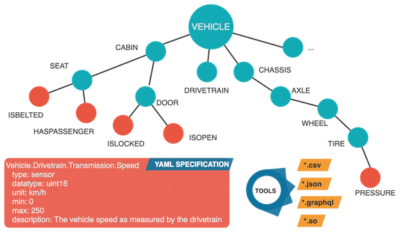
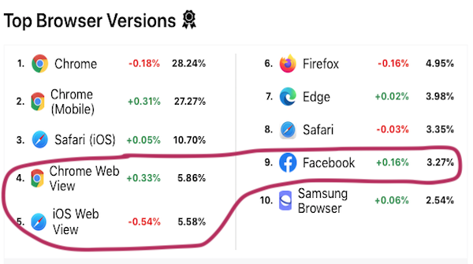

VSSo is an #ontology created from Vehicle Signal Specification (VSS). It provides a reusable model for describing and interacting with #vehicle #data. Two documents have been published: VSSo (https://www.w3.org/TR/2022/WD-vsso-20220303/) and VSSo Core (https://www.w3.org/TR/2022/WD-vsso-core-20220303/) #timetogiveinput https://twitter.com/w3c/status/1499376400314384386
VSS started in 2016 as a project of the GENIVI Alliance - now @COVESAglobal - aiming at standardizing vehicle signals and attributes. It's a tree structure connecting #vehicule parts and signals as shown in this image below:
https://twitter.com/w3cdevs/status/1501199054428065799VSSo Core defines the structural building blocks of VSS, and VSS holds the vocabulary as defined by the standard catalogue. Find out more in the primer: https://w3c.github.io/vsso/spec/vsso-primer
https://twitter.com/w3cdevs/status/1501199062078476291Feedback is welcome in the related #GitHub repo: https://github.com/w3c/vsso/
https://twitter.com/w3cdevs/status/1501199066092421125Thanks for the nice #WebGPU intro indeed! Check also https://twitter.com/w3cdevs/status/1394635172247703552 and follow the work that happens on #GitHub: https://github.com/gpuweb https://twitter.com/DasSurma/status/1501190438774050817
https://twitter.com/w3cdevs/status/1501240900206399501The #Autoplay Policy Detection #API exposes whether automatically starting the playback of a media file can succeed. The response it returns is informative and non binding #timetogiveinput https://twitter.com/w3c/status/1503650867173601281
Is that enough to adjust the user experience that you may have in mind? The @w3c Media #WorkingGroup is looking for Web #developer feedback in https://github.com/w3c/autoplay/issues/23 Thx! 🙏
https://twitter.com/w3cdevs/status/1503652546686169089This #W3CWorkshop explored evolutions of the #Web platform to address professional #media production requirements. About 40 #GitHub issues were raised: https://github.com/w3c/media-production-workshop/issues ! https://twitter.com/w3c/status/1503272141181046786
Main outcome of the workshop is that even though the #WebPlatform already provides building blocks to enable core #MediaProduction scenarios, these are not powerful enough to create full-fledged experiences on client #devices: https://www.w3.org/2021/03/media-production-workshop/report.html#next-existing
https://twitter.com/w3cdevs/status/1503769004044861440Most of the gaps raised during the workshop touch on #API features in specifications that are already being developed: https://www.w3.org/2021/03/media-production-workshop/report.html#next-ongoing
https://twitter.com/w3cdevs/status/1503769012517355529As a next step, workshop participants propose the creation of a Media Production #TaskForce that the Media & Entertainment #InterestGroup could host: https://www.w3.org/2021/03/media-production-workshop/report.html#next-tf
https://twitter.com/w3cdevs/status/1503769016338370570If you're interested to participate and/or contribute to this #TaskForce, please get in touch with our colleague François Daoust @tidoust, the @w3c Media #WorkingGroup (https://www.w3.org/media-wg/) staff contact. Thx!
https://twitter.com/w3cdevs/status/1503769020134268937📢This new @w3c #CommunityGroup aims to make #WebViews work for the Web!
Read @dontcallmeDOM's post https://www.w3.org/blog/2022/03/making-webviews-work-for-the-web/ or follow the 🧵 below 👇 https://twitter.com/w3c/status/1504413725347962885
#WebViews are software components used in native #apps to render content based on Web technologies outside a Web #browser. A significant portion (around 14%) of Web pages are rendered by WebView components rather than by browser engines - source: https://radar.cloudflare.com/#top-browser-versions
https://twitter.com/w3cdevs/status/1504441622045540353WebViews are used pervasively, both on #mobile and #desktop platforms. They re-use part of the Web infrastructure in a native ecosystem, e.g.: #advertising, #authentication, #payment
https://twitter.com/w3cdevs/status/1504441631717658627So, this group aims to identify, understand and reduce the issues arising from the use of #WebViews. If interested to participate in the discussions and bring insights, please join the group. It's free to join! https://www.w3.org/community/webview/join
https://twitter.com/w3cdevs/status/1504441636247506951They also provide a platform to integrate #apps or contents from third-party providers (e.g. #MiniApps, embedded #games), or render traditional Web content directly within a native app (so called in-app browsers)
https://twitter.com/w3cdevs/status/1504441633978437635Did you know? More than 15000 individuals are participating in W3C groups: 1,8k in #WorkingGroups and #InterestGroups, 13k in #CommunityGroups, and about 225 Invited Experts - What an amazing #community the world over! 🙏❤️
#CallToAction: come work with us to shape the future of the Web! https://www.w3.org/participate/
E.g., enroll in and/or create a Community Group (https://www.w3.org/community/), get involved in our #github repos (https://github.com/w3c/), ...
https://twitter.com/w3cdevs/status/1506618758483394561... and have your organization join @w3c (https://www.w3.org/Consortium/join) to take part in Working and Interest Groups, shaping the technologies that enable businesses and their customers. Browse the list! https://www.w3.org/groups/
https://twitter.com/w3cdevs/status/1506618765034807311Quoting @jeff_jaffe, W3C's CEO: "It will take a collaborative effort to ensure the Web becomes more #accessible to people around the world, more #secure, and can function as the engine to fuel growth in key parts of #economy and #society" -
https://www.w3.org/blog/2022/03/a-letter-from-our-ceo-the-web-as-the-ultimate-tool-of-resilience-for-the-world/
https://twitter.com/w3cdevs/status/1506618768172236803The @webi18n activity issued 2 new documents that explore gaps in #language support on the #Web and in #ebooks for: #uighur #kashmiri 👉#timetogiveinput https://twitter.com/webi18n/status/1508759423363260417
Are you an expert contributor? Please help us move this work forward by answering questions, documenting other gaps in support, and creating tests! 🙏
Check the #language enablement page for #Arabic Script Languages: https://w3c.github.io/alreq/home
https://twitter.com/w3cdevs/status/1508804059440074752